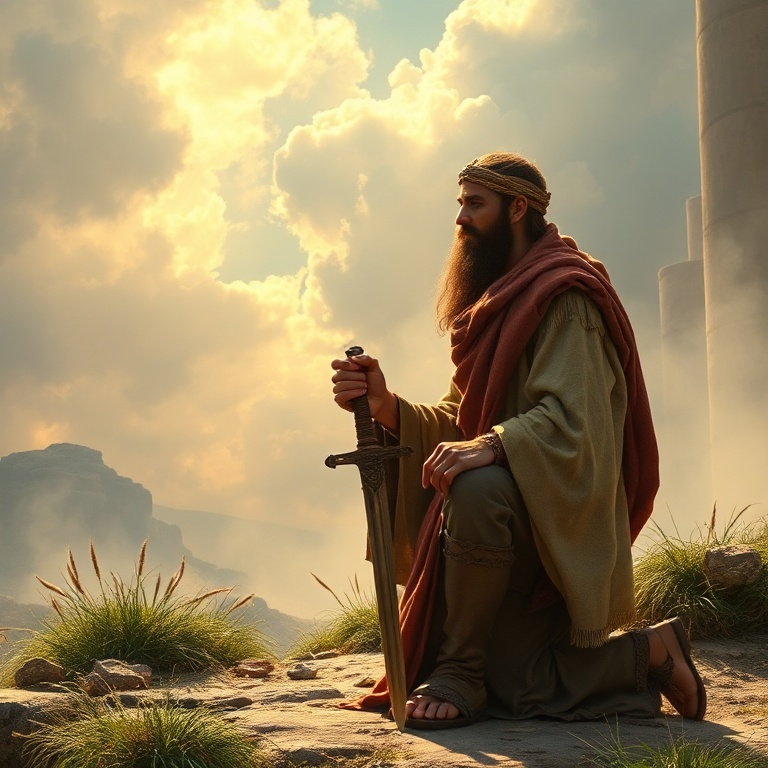
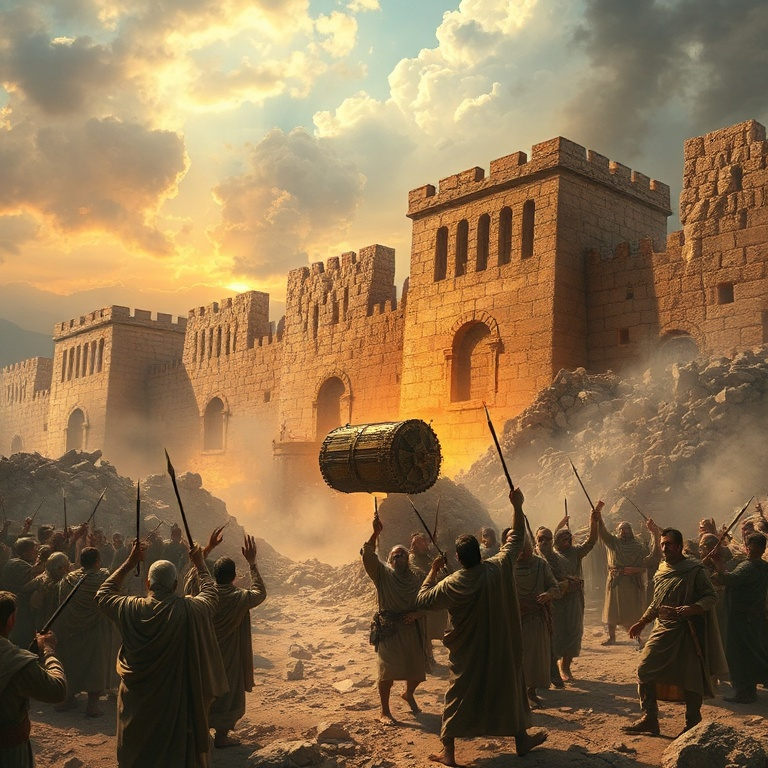
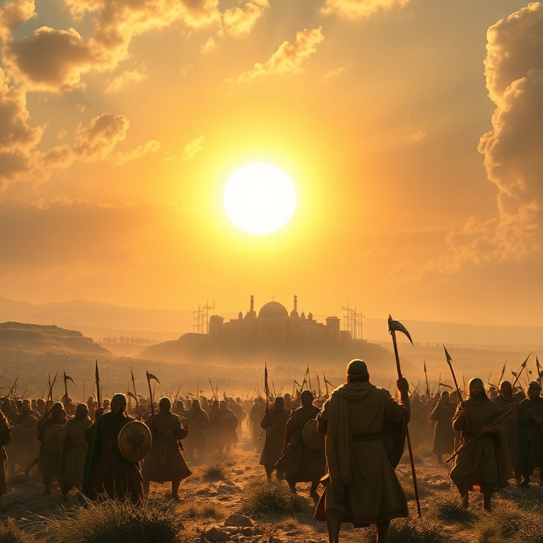
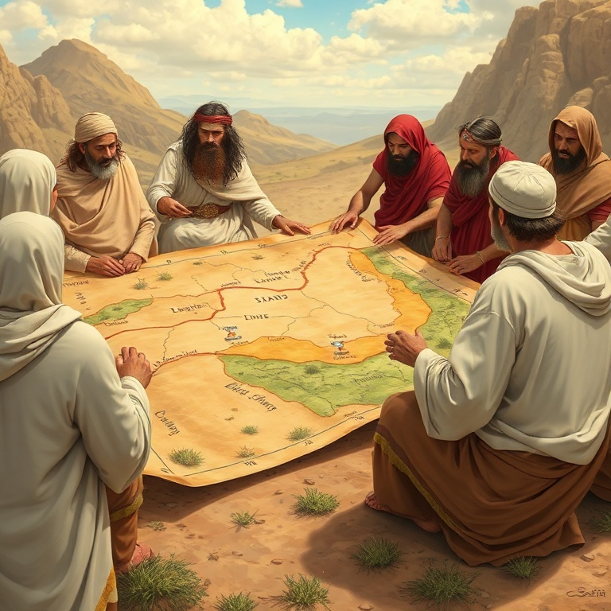
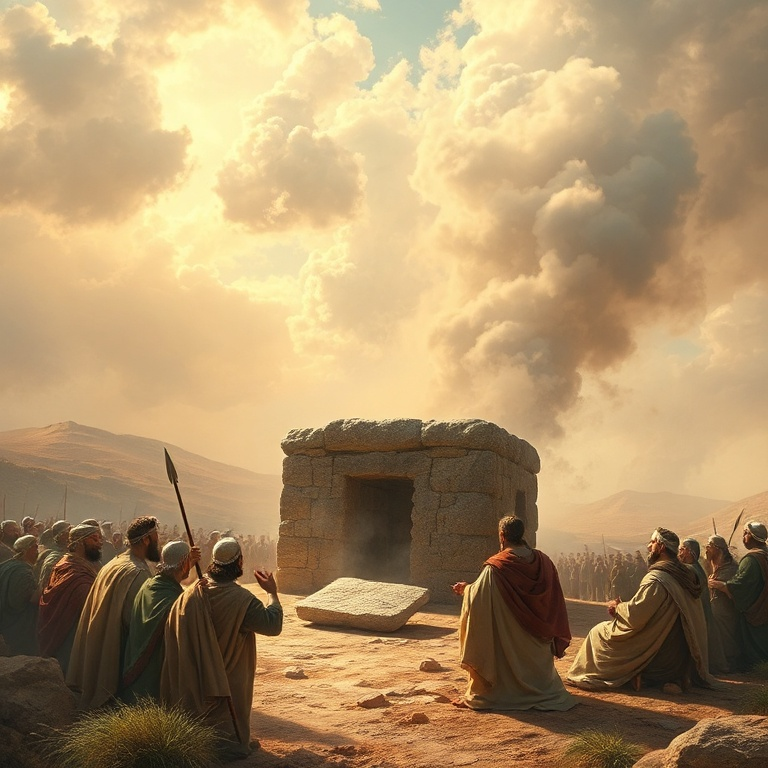

Introdução
Josué é o livro da conquista. Depois de quarenta anos no deserto, Israel finalmente cruza o Jordão para tomar posse da terra prometida aos patriarcas. Josué, o sucessor de Moisés, lidera o povo com coragem e fé. O livro narra as campanhas militares, a divisão da terra e a renovação da aliança. O nome Josué significa "O Senhor salva", a mesma raiz hebraica de Jesus. Josué é um tipo de Cristo — ele lidera o povo de Deus à vitória e ao descanso na terra prometida. Assim como Josué conduziu Israel à herança terrena, Jesus conduz seu povo à herança celestial. A conquista de Canaã é figura da vida cristã de vitória pela fé. A mensagem central de Josué é que Deus cumpre suas promessas. Cada passo de fé é recompensado com a fidelidade divina. O livro também ensina que a obediência é condição para a bênção. Quando Israel obedece, vence; quando desobedece, fracassa. A fé ativa e a obediência radical são os caminhos para experimentar as promessas de Deus.
1) Josué Assume a Liderança

1) Josué Assume a Liderança
Após a morte de Moisés, Deus falou diretamente a Josué, ordenando-lhe que atravessasse o Jordão com todo o povo. Deus prometeu estar com Josué assim como estivera com Moisés, e enfatizou três vezes: "Sê forte e corajoso". A coragem de Josué não vinha de si mesmo, mas da promessa da presença de Deus. Josué assumiu a liderança com sabedoria. Ele enviou espias a Jericó e deu instruções claras ao povo. Ordenou que preparassem provisões, pois em três dias cruzariam o Jordão. Josué também lembrou as tribos de Rúben, Gade e meia tribo de Manassés de seu compromisso de lutar ao lado dos irmãos. A resposta do povo foi encorajadora: "Tudo quanto nos ordenaste faremos, e aonde quer que nos enviares iremos". Eles prometeram obedecer a Josué assim como obedeceram a Moisés, e declararam que qualquer um que se rebelasse seria morto. A unidade do povo era essencial para a conquista que viria. Josué nos ensina que a liderança espiritual começa com a obediência a Deus. A coragem não é ausência de medo, mas confiança na presença de Deus. Assim como Josué foi chamado a ser forte e corajoso, somos chamados a confiar nas promessas de Deus e a avançar pela fé.
2) A Conquista de Jericó

2) A Conquista de Jericó
Jericó era uma cidade fortificada, com muros imponentes e portas fechadas. Humanamente falando, era inexpugnável. Mas Deus deu a Josué uma estratégia incomum: marchar ao redor da cidade uma vez por dia durante seis dias, e no sétimo dia, marchar sete vezes e gritar. A vitória viria pela obediência à palavra de Deus, não pela força militar. Os sacerdotes levavam a arca da aliança, e os guerreiros marchavam em silêncio. Durante seis dias, a procissão circundou Jericó. No sétimo dia, após sete voltas, Josué ordenou: "Gritai, porque o Senhor vos deu a cidade". Os muros caíram, e Israel destruiu completamente a cidade, poupando apenas Raabe e sua família. Raabe, a prostituta de Jericó, escondeu os espias israelitas e professou fé no Deus de Israel. Ela disse: "O Senhor vosso Deus é Deus em cima nos céus e em baixo na terra". Raabe foi poupada e entrou na linhagem do Messias. Sua história mostra que a fé salva independentemente do passado. A conquista de Jericó nos ensina que a vitória vem pela fé e obediência, não por estratégias humanas. Os muros caíram pela fé, como Hebreus nos lembra. Jericó nos desafia a confiar em Deus para vencer batalhas impossíveis.
3) As Campanhas Militares

3) As Campanhas Militares
Após Jericó, Israel enfrentou Ai. Dessa vez, a derrota veio por causa do pecado de Acã, que tomou objetos consagrados ao Senhor. Israel foi derrotado e trinta e seis homens morreram. Josué clamou a Deus, e o Senhor revelou o pecado no acampamento. Acã e sua família foram julgados, e a vergonha foi removida. Com o pecado removido, Israel atacou Ai novamente, desta vez com uma estratégia de emboscada. A cidade foi conquistada e destruída. Josué construiu um altar ao Senhor no monte Ebal e escreveu ali a lei de Moisés. Ele leu todas as palavras da lei para o povo, incluindo as bênçãos e maldições. Os gibeonitas enganaram Israel fazendo uma aliança com eles, fingindo ser de uma terra distante. Josué não consultou ao Senhor e fez um pacto que não deveria ter feito. Quando o engano foi descoberto, Josué manteve a aliança, mas os gibeonitas tornaram-se servos. Isso trouxe consequências futuras para Israel. Josué liderou campanhas contra o sul e o norte de Canaã, derrotando uma coalizão de reis. Em Bete-Horom, Deus fez o sol parar para que Israel completasse a vitória. Nunca houve dia como aquele, em que Deus ouviu a voz de um homem. As campanhas mostraram que o Senhor pelejava por Israel.
4) A Divisão da Terra

4) A Divisão da Terra
Depois das campanhas militares, Josué, já idoso, iniciou a distribuição da terra entre as tribos. A terra foi dividida por sorteio diante do Senhor, garantindo que a distribuição fosse dirigida por Deus. Calebe, que aos oitenta e cinco anos ainda era forte, recebeu Hebrom como herança, lutou contra os anakins e tomou posse. As tribos de Rúben, Gade e meia tribo de Manassés receberam suas heranças a leste do Jordão. As outras nove tribos e meia receberam a oeste. Josué estabeleceu cidades de refúgio, onde os homicidas involuntários podiam buscar proteção. Essas cidades simbolizam a segurança que encontramos em Cristo. A distribuição da terra foi minuciosa. Cada tribo recebeu seu território com fronteiras definidas. Josué também determinou que as cidades dos levitas fossem espalhadas por toda a terra, para que o ensino da lei estivesse acessível a todos. A presença dos levitas lembrava Israel de sua identidade como povo de Deus. A terra era a herança prometida, um presente de Deus para Israel. Mais do que propriedade, era o lugar onde Israel viveria em comunhão com Deus. A terra é figura da herança celestial que temos em Cristo. Assim como Israel tomou posse pela fé, nós tomamos posse das promessas pela fé.
5) Renovação da Aliança

5) Renovação da Aliança
Josué, já avançado em idade, convocou todo o Israel em Siquém para renovar a aliança com Deus. Ele fez um discurso de despedida, recordando toda a história de redenção desde Abraão até a conquista de Canaã. Josué destacou a fidelidade de Deus em cada etapa e chamou o povo à fidelidade. O desafio de Josué foi direto: "Escolhei hoje a quem sirvais". Ele deixou claro que servir a Deus exigia exclusividade e sinceridade. Josué declarou pessoalmente: "Eu e a minha casa serviremos ao Senhor". O povo respondeu afirmativamente, prometendo servir ao Senhor e obedecer à sua voz. Josué fez uma aliança com o povo naquele dia, estabeleceu estatutos e ordenanças, e escreveu tudo no livro da lei. Ele tomou uma grande pedra e a colocou debaixo do carvalho, como testemunha contra Israel, caso eles fossem infiéis. A pedra era um memorial visível do compromisso assumido. Josué morreu com cento e dez anos e foi sepultado em Timnate-Sera. Enquanto viveram os anciãos que viram as obras de Deus, Israel serviu ao Senhor. O livro termina com a morte de Josué e dos anciãos, preparando o cenário para o período dos juízes.
Conclusão
Josué é um livro de vitória e fidelidade. A conquista de Canaã demonstra que Deus cumpre suas promessas e que a obediência traz vitória. Josué liderou Israel com coragem e fé, deixando um exemplo de liderança que confia em Deus acima de tudo. A mensagem de Josué ecoa até hoje: Deus é fiel, e podemos confiar em suas promessas. Assim como Israel tomou posse da terra, somos chamados a tomar posse das bênçãos espirituais em Cristo. A escolha de Josué permanece relevante: "Eu e a minha casa serviremos ao Senhor".